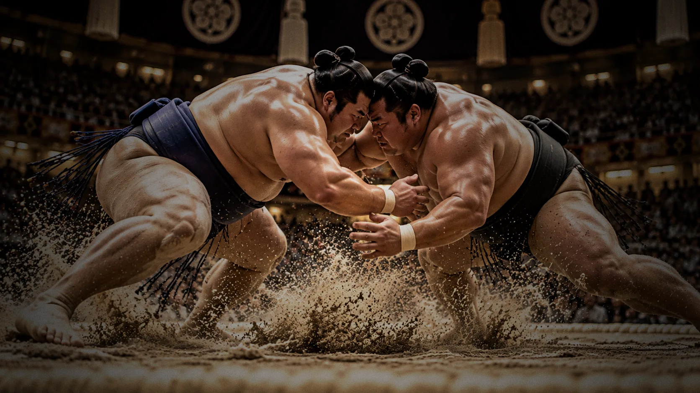
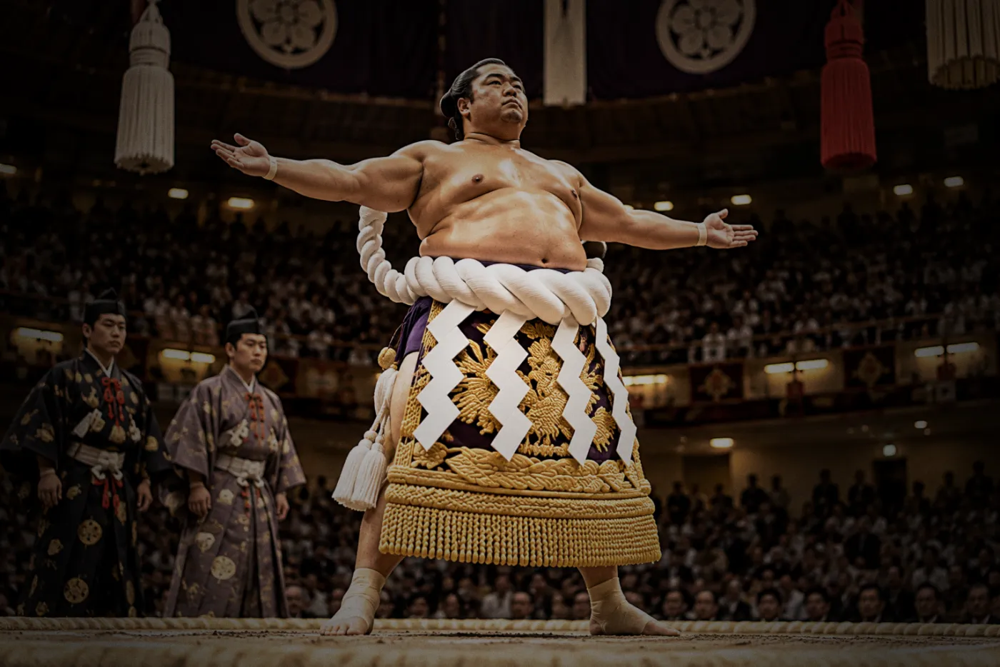
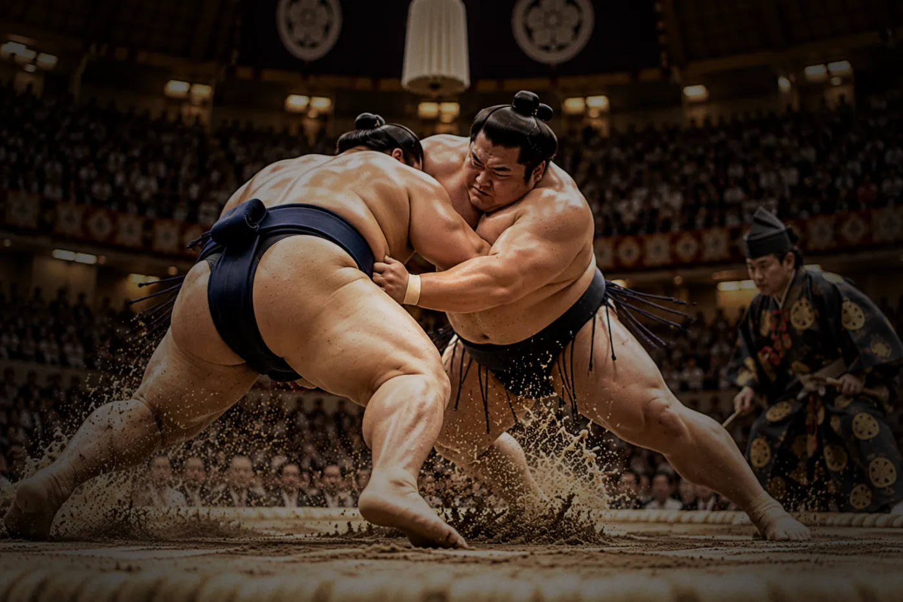
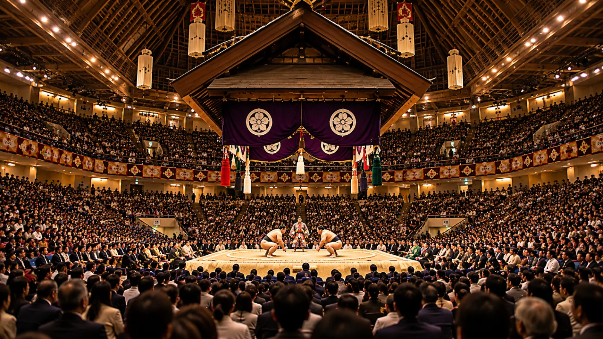

勝敗の決まり方
次のどちらかになった力士が負けです。
- 足の裏以外の体の一部（手やひざなど）が土俵の地面についた
- 体の一部が土俵の外の地面に出た
このほか、髪をつかむ、握りこぶしでなぐるなどの「反則」をした場合も負けになります。

ABOUT

相撲は、まわしを締めた2人の力士が「土俵（どひょう）」と呼ばれる円の中で組み合い、相手を倒すか円の外に出すことを競う競技です。ルールはとてもシンプルで、勝負は数秒で決まることも少なくありません。
その一瞬の中に、体の大きさだけでは決まらない駆け引きや技の工夫が詰まっています。小柄な力士が大きな相手を投げ飛ばすこともあり、そこが相撲の大きな魅力です。
相撲は古くから、豊作を願う神事（神様にささげる儀式）として行われてきたと伝えられています。今でも、土俵に塩をまいて清める、力士が髷（まげ）を結う、行司（ぎょうじ）が伝統的な装束を着るなど、競技の中に昔からのしきたりが数多く残っています。
スポーツとしての迫力と、伝統文化としての美しさ。その両方を味わえるのが相撲です。
RULE

次のどちらかになった力士が負けです。
このほか、髪をつかむ、握りこぶしでなぐるなどの「反則」をした場合も負けになります。
土俵は土を固めて作られた台で、その上に俵（たわら）を円形に並べた勝負の場があります。円の直径は15尺（約4.55m）です。
「決まり手」とは、勝負が決まったときの技の名前です。日本相撲協会では82の決まり手が定められています。まずは次の4つを覚えると観戦が楽しくなります。
RANKING
「番付（ばんづけ）」とは、力士の地位を表すランキング表のことです。本場所（公式の大会）の成績によって、場所ごとに上がったり下がったりします。ここでは、最上位の「幕内（まくうち）」の地位を上から順に紹介します。
力士の最高位。強さに加えて品格も求められ、成績が下がっても大関に落ちることはありません。そのかわり、力が衰えたときは引退することになります。
横綱に次ぐ地位。安定して好成績を残せる実力者が昇進します。2場所続けて負け越すと関脇に下がります。
大関の次の地位。大関をめざす力士たちがしのぎを削ります。
関脇の次の地位。大関・関脇・小結をまとめて「三役（さんやく）」と呼びます。
幕内で最も人数が多い地位。「前頭筆頭」「前頭二枚目」のように数字で細かく順位が分かれています。
EXPERIENCE

本場所は年6回、それぞれ15日間開かれます。会場は東京（年3回）、大阪、名古屋、福岡です。
会場では朝から下の地位の力士の取組が始まり、時間がたつにつれて上の地位の取組になっていきます。幕内力士がそろって土俵に上がる「土俵入り」や、その日の最後の取組のあとに行われる「弓取り式」など、取組以外の儀式も見どころです。